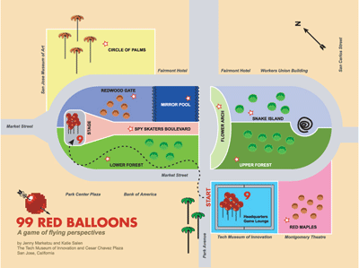

99 Red Balloons: A game about flying perspectives Inspired by A Midsummer Nights Dream and the 80s pop song 99 Red (Luft)Balloons by the German singer Nena. Location: Headquarters and lounge of The Tech Museum for Innovation;
Street game played at Cesar Chavez Plaza
Dates: ZeroOne San Jose: A Festival of Art on the Edge
ISEA2006, August 7 through 13, 2006 Play Sessions: Monday, August 7, 2:00 to 3:00 pm Tuesday, August 8, 5:00 to 6:00 pm Wednesday, August 9, 1:00 to 2:00 pm and 5:00 to 6:00 pm Friday, August 11, 1:00 to 2:00 pm and 4:00 to 5:00 pm Saturday August 12, 1:00 to 2:00 pm, 2:00 to 3:00 pm, and 5:00 to 6:00 pm
 Project Description: Everyone should be offered the opportunity to play with those maverick flying red messengers. 99 Red Balloons is a live action street game in which players control large red balloons equipped with wireless cameras that are designed to capture and record the game play. Each game is recorded and broadcast simultaneously on five flat screens located in the headquarters and lounge of the Tech Museum of Innovation in San Jose, CA. 99 Red Balloons takes place in and around the grounds of the popular Cesar Chavez Plaza dedicated to community activities. The game requires players to redesign a set of fantastical mini-games in collaboration with members of the public. Nine teams with two leaders participate in each round: one plays the role of the Spy Fairy and the other that of the Aerial Navigator whose first move in the game is to convince members of the public to join their team. Players must use their imagination to create the most transgressive version of classic street games -- from massive multiplayer to spy and hide-n-seek in the sky games -- and then convince as many people as possible to come and play. The game is recorded live by Spy Fairy cameras attached to nine of the weather balloons that broadcast the footage back to the Game Headquarters, located in the Tech Museum. At the end of the play session (45 minutes in length), all players return to the Headquarters to view footage of the games, and to vote for the Spy Fairy and Aerial Navigator team with the best solution. Players thus also become jurors in this topsy-turvy game of change, where reinventing rules is the only way to play. Game Rules: 1. The game is played by 9 teams with 18 red inflated helium balloons attached to a 30 feet tether. Each team is lead by two players: the Spy Fairy and the Aerial Navigator. The Spy Fairy is holding a red weather balloon equipped with a small wireless camera and the Aerial Navigator just a red balloon, which is supposed to attract more players from the public to join the game. 2. Game sessions are timed at 45 minutes each. The end of the game is announced by megaphone, and players must stop and return with their balloons to the Headquarters for the judging period. 3.The Spy Fairy and Aerial Navigator have agreed to play together as a team and must travel together, always flying their balloons. On their way, they must convince other members of the public to play with them. 4. Each Spy Fairy and Aerial Navigator are assigned a Play Area -- which is based on a mini version of an existing classic game -- on the game board, which is Chavez Plaza. 5. Players may change as many rules of their Area's mini game as they want and must produce pleasurable actions enjoyed by the players and spectators. 6. The team receiving the most votes for their redesign wins. The players themselves serve as judges during the voting round. 7. A team can be disqualified from inclusion in the voting round for the following reasons: *Going to the wrong Area: there can only be one Spy Fairy / Aerial Navigator team per Area, and teams must play within the Area assigned to them. *Losing or breaking a balloon. If this should happen, game play can continue, but the team will not be included in the voting round. *Failing to return to Headquarters at the end of the 45-minute game session. Game Areas: - Mirror Pool
- Circle of Palms
- Skaters Boulevard
- Redwood Gate
- Upper Forest
- Lower Forest
- Snake Island
- Flower Arch
- Red Maples
Playing 99 Red Balloons: Sign-up to Play: Game sessions begin at the Headquarters inside the Tech Museum of Innovation. The Spy Fairies and the Aerial Navigators for each team are selected in advance. Players may only sign up for one session at a time, but players may participate in multiple sessions over the course of five days. All players are asked to limit their participation to one session if there is a waiting list. Players: During the game, Spy Fairies and Aerial Navigators travel together to their assigned Area. Their goal is to redesign their Area's mini-game and attract more players than any other Spy Fairy team. End of Game: At the end of the 45-minute game session, Spy Fairies and their Aerial Navigators must immediately return to the stage at the top of Cesar Chavez Plaza with their balloons. Spy Fairies and Aerial Navigators are then asked to gather at the base of the stage and proceed back to Headquarters as a group. Once all the players have arrived at HQ, the Spy Fairy balloons will be removed and the game footage reviewed by the group. Voting session: During this period, all players have a chance to watch the footage of each team's session and to nominate a team as the game's overall winner. Once the group has decided on a number of nominees, a vote is taken. Each player can cast only one vote, and the Spy Fairy and Aerial Navigator team with the most votes wins. In case of a tie, a tie-breaker vote is taken. If no teams are nominated, the session terminates without a winner. The winning team will receive a prize and the opportunity to compete against the week's other winners in the Final Showdown round on Saturday July 13, 4-5 pm. All the winning teams will receive a prize which will be a temporary tattoo, an IMAX pass at The Tech Museum, or a free ticket to one of the ZeroOne Festival evening performances at California Theater. Project Objectives: Intrigued by the physicality, joy, and freedom that characterize children's "play," we aim to transform these emotions and qualities into a formal and visual language. The objective of 99 Red Balloons is to create a socially engaging game that uses surveillance technologies to explore - The urban environment from an aerial perspective through observation, judgment, and subversion
- Gaming as a cultural behavior
- The city as a theater
- Locative media, real time imaging, software platforms, and networks as defining technologies for designing a game
- And to create narrative experiences that stimulate intense forms of human communication among players and public.
Players achieve a kind of inverted sense of authority by participating in a game that seeks to transform and transcribe its own play through a re-engineering of embedded mini games. The transformation of a playful and innocent object, a red balloon, into a surveillance tool returns a certain amount of power to the people. Credits 99 Red Balloons has been developed and produced with the support of the following sponsors and individuals: Main Sponsors:
On Net Surveillance Systems, Inc (OnSSI),
AXIS Communications Additional Support:
The Tech Museum of Innovation, San Jose, CA
ZeroOne,SanJose: A global Festival of Art on the Edge
The Project Room, NY and New Art Lab
Parsons the New School for Design, New York Tech Team:
Doug Miller
Dan Corr
Bud Everts
Ximena Díaz Gómez
Rich Turner Web Design:
Nyunny Kim Special thanks:
Greg Brown
Karen Chenevert
Mulli Diamant
Steve Dietz
Christiane Paul
Keren Rosenbaum
Wanda Webb
Anu Vikram Volunteer Coordinators:
Julia Bradshaw
Gina Campanella
Cynthia Taylor
Andrea Zulliger
|